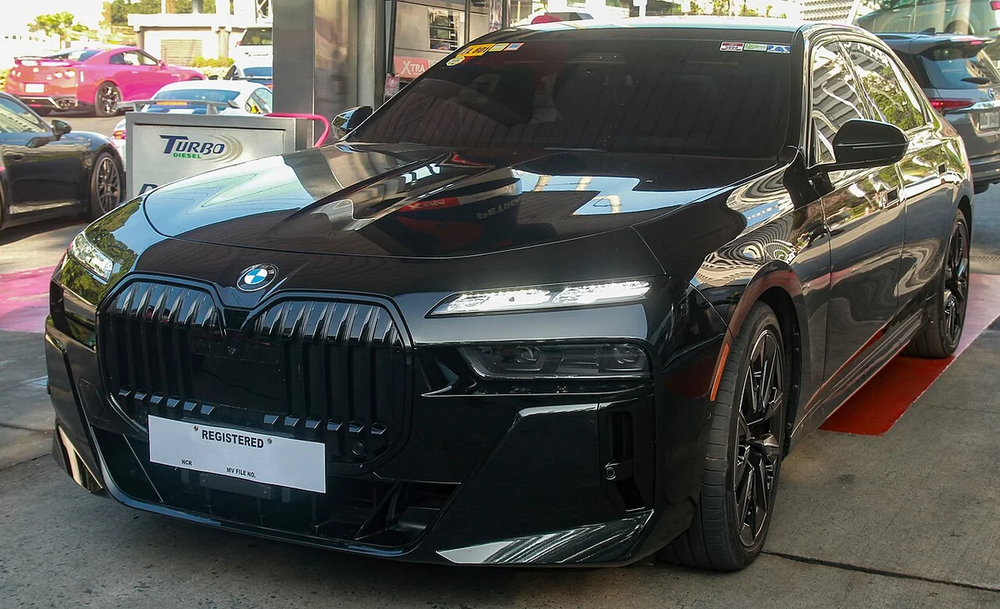
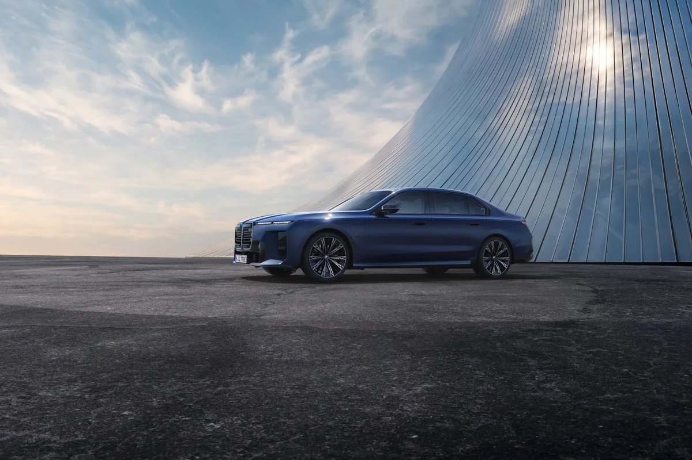
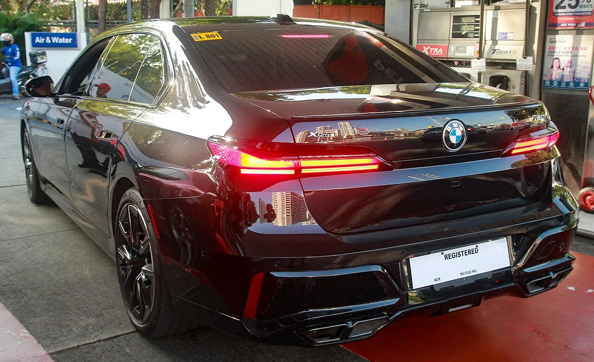
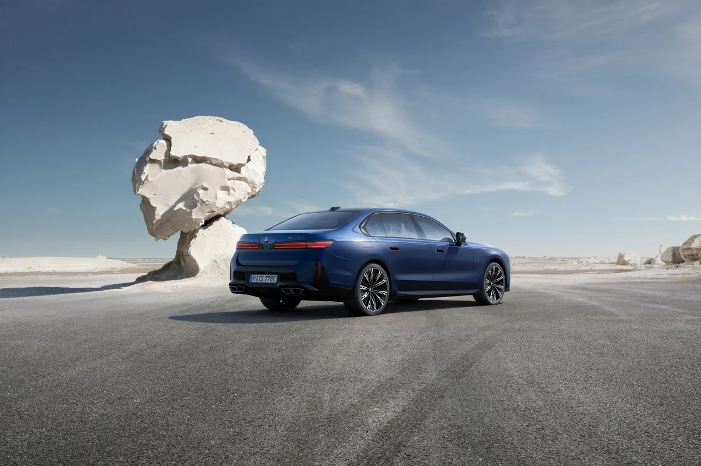
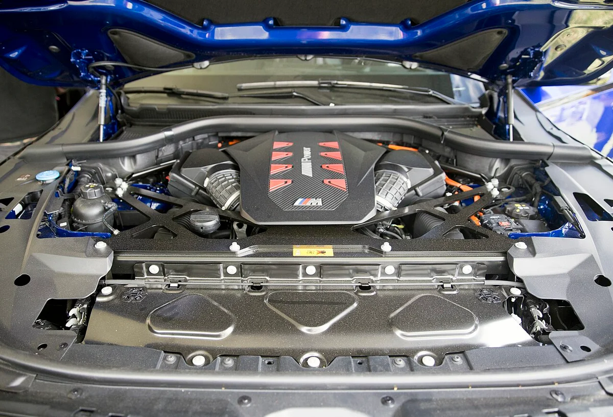
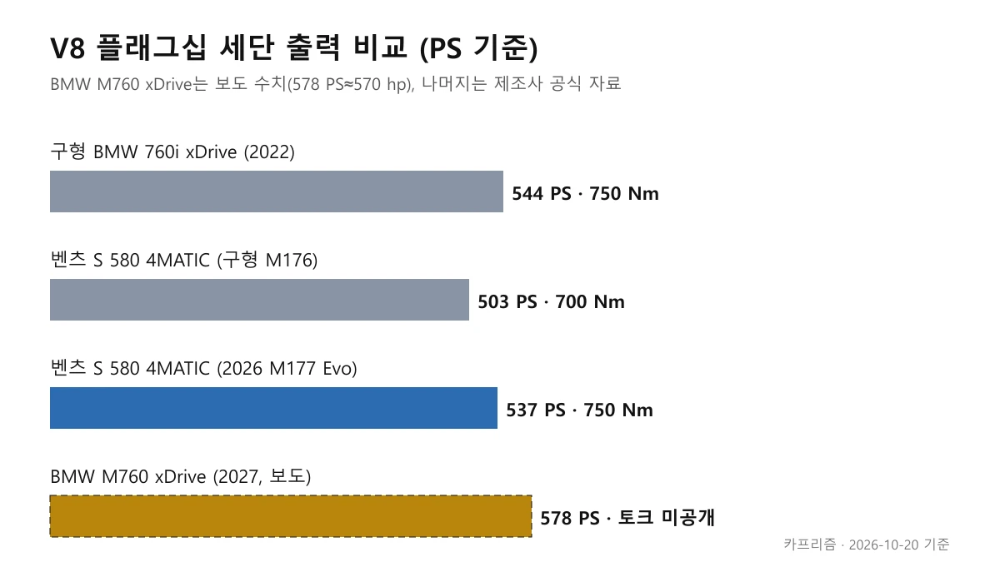
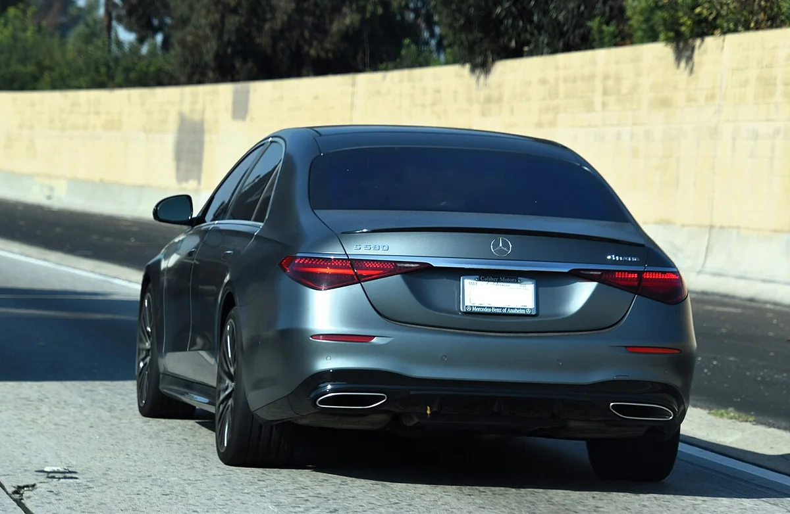
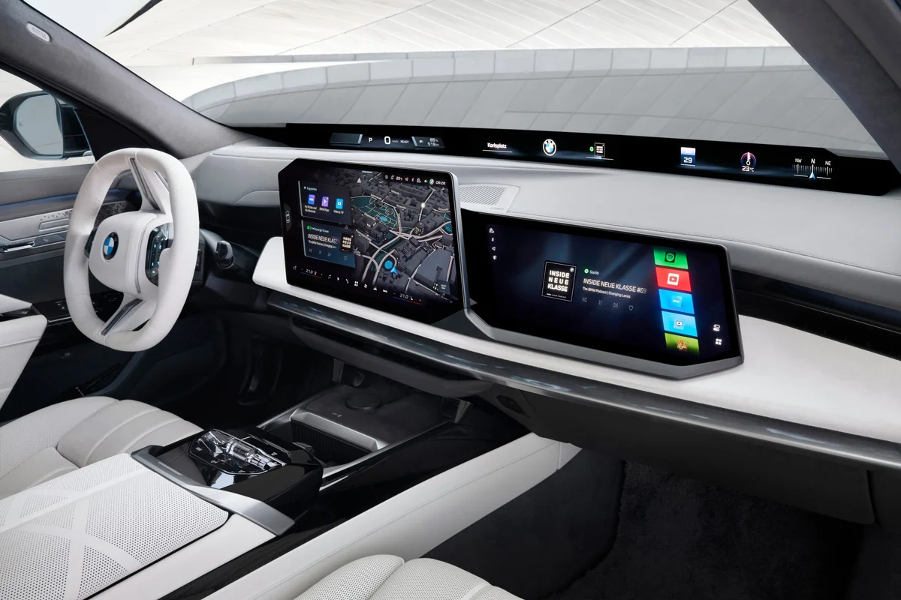
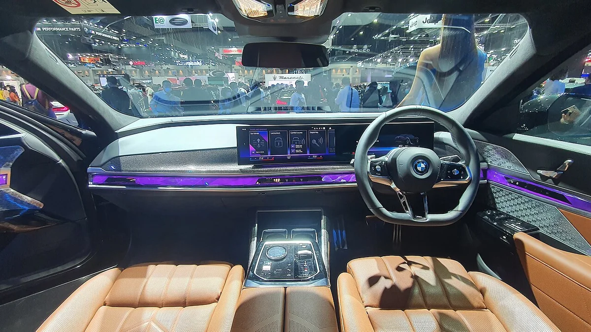
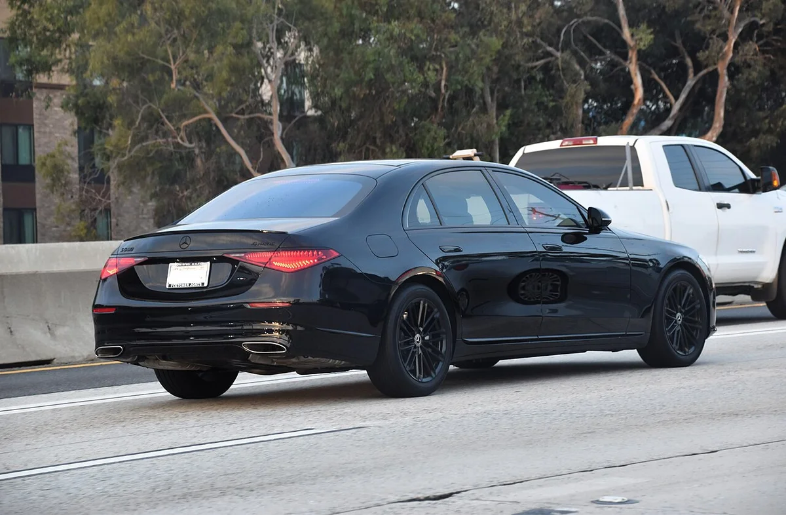

▲ 구형(부분변경 전) 7시리즈 760i xDrive 전측면. 2027년형 M760 xDrive의 실제 사진이 아니다 ⓒ Ethan Llamas, Wikimedia Commons (CC BY-SA 4.0)
"BMW 7시리즈에 V8이 정말 돌아왔다는데, 마력은 벤츠 S 580을 넘나?" 2026년 10월 14일 전후로 해외 매체들이 2027년형 BMW M760 xDrive를 일제히 보도했다. 이 글은 BMW가 이미 공식 문서로 밝힌 사실과 매체 보도로만 확인되는 수치를 나눠서 정리한다.
결론부터 말하면 "V8 M 퍼포먼스 모델이 2027년에 추가된다"는 것은 BMW 공식 자료(2026년 4월)로 확인된다. 반면 M760 xDrive의 출력(570마력 안팎)은 이번 조사에서 BMW 원문을 직접 열어보지 못해 "보도 기준"으로만 쓴다. 토크와 가격, 한국 도입은 아직 공개된 근거를 찾지 못했다.
1. 어디까지가 공식이고, 어디부터가 보도인가
BMW가 2026년 4월 배포한 7시리즈 부분변경 미디어 인포메이션(04/2026)에는 "2027년에 기존 V8 엔진을 쓰는 또 하나의 BMW M 퍼포먼스 모델이 라인업에 추가된다"는 문장이 있다. 같은 문서는 M 퍼포먼스 모델이 모두 세 가지(i7 M70 xDrive, M760e xDrive, V8 모델)라고 적었다. 즉 V8의 복귀 계획 자체는 반년 전에 공식이었다.
이번 10월 보도의 새 내용은 이름과 수치다. BMWBLOG(2026.10.14)와 독일 매체 Bimmertoday(2026.10.14)는 이 차를 M760 xDrive로 소개하며 출력을 각각 570hp, 578PS로 적었다. 두 매체 모두 BMW 보도자료 원문 링크를 달지 않았고, 이번 조사에서도 BMW 글로벌·미국 프레스룸에서 이 차의 공식 제원 문서는 찾지 못했다. 그래서 아래 표처럼 구분한다.
| 항목 | 확인 수준 | 근거 |
|---|---|---|
| 2027년 V8 M 퍼포먼스 모델 추가 | BMW 공식 | 미디어 인포메이션 04/2026 |
| 모델명 M760 xDrive | 보도 | BMWBLOG, Bimmertoday(10.14) |
| 4.4리터 트윈터보 V8, 570hp/578PS | 보도(매체별 563hp 표기도 있음) | BMWBLOG 본문 563hp·제목 570hp, Bimmertoday 578PS |
| 0→60mph 3.5초 | 보도 | BMWBLOG |
| 최대토크·가격 | 미공개로 확인 | 인용한 보도 모두 수치 없음 |
| 미국 2027년 상반기 판매, 유럽 판매 | 보도 | 유럽 일정은 구체적으로 확인하지 못함 |

▲ 구형(부분변경 전) 7시리즈 760i xDrive의 전면. 2027년형 M760 xDrive의 실제 사진이 아니다 ⓒ Ethan Llamas, Wikimedia Commons (CC BY-SA 4.0)
2. M760 xDrive: 570마력대 V8, 토크는 아직 없다
보도를 종합하면 M760 xDrive는 4.4리터 트윈터보 V8을 얹고 xDrive 사륜구동이 기본이며, 기존 760i xDrive를 대체하는 위치다. BMWBLOG는 이 엔진을 "최신 S68"이라고 서술했지만, 이는 매체 서술이고 BMW가 엔진 코드를 확인했다는 근거는 찾지 못했다.
출력 표기가 매체마다 다르다는 점은 주의해야 한다. BMWBLOG는 제목에서 570hp라고 적었고, 앞선 확인에서는 본문에 563hp 표기가 있었다는 지적이 있었으나 10월 20일 재확인한 페이지에서는 570hp만 보였다(수정됐을 수 있다). 독일 Bimmertoday의 578PS는 미터법 마력 기준이고, 이를 영미식 hp로 바꾸면 약 570hp다. 570hp와 578PS는 같은 값으로 보인다(카프리즘 환산). 563hp 표기의 정확한 출처는 확인하지 못했다. 재확인한 한 영어권 요약에서는 토크 수치와 마일드 하이브리드 언급이 없었고, MercedesBlog는 "마일드 하이브리드 보조가 없는 4.4리터 트윈터보 V8"이라고 서술했다.
외관은 M 스포츠 프로 프런트 스타일링, 22인치 휠, M 미러캡, 노출형 배기구, M760 배지가 소개됐다. 실내는 M 스포츠 스티어링 휠과 iDrive X의 BMW M 전용 화면이 언급됐다. 다만 이 항목들도 BMWBLOG 보도 기준이다.

▲ 2026년 4월 공개된 부분변경 7시리즈 BMW M760e xDrive(PHEV)의 전측면. V8 모델 M760 xDrive의 사진이 아니며, 외관 방향성을 보는 참고용이다 ⓒ BMW Group PressClub (BMW M760e xDrive 04/2026, P90638734)

▲ 구형 7시리즈 760i xDrive M 스포츠 패키지 프로의 후면. 신형 M760 xDrive의 디퓨저와는 다를 수 있다 ⓒ Ethan Llamas, Wikimedia Commons (CC BY-SA 4.0)
| 모델 | 구동계 | 출력 | 토크 | 근거 |
|---|---|---|---|---|
| 760i xDrive(2022 공개) | 4.4 V8 + 48V 마일드 하이브리드 | 400kW(544PS, 미국 표기 536hp) | 750Nm | BMW 미디어 인포메이션 04/2022 |
| M760e xDrive(2026.11 출시) | 3.0 직렬 6기통 PHEV | 시스템 450kW(612hp), 엔진 313kW(426hp) | 시스템 800Nm | BMW 미디어 인포메이션 04/2026 |
| M760 xDrive(2027) | 4.4 트윈터보 V8 | 570hp/578PS(보도) | 미공개 | BMWBLOG, Bimmertoday |
구형 760i의 수치는 BMW 2022년 문서에서 직접 확인했다. 보도대로라면 M760은 구형 760i보다 약 34PS(약 6%) 높다(카프리즘 계산). 다만 Bimmertoday와 MercedesBlog는 신형 V8에 전동화(마일드 하이브리드)가 없다고 서술해, 구형 760i의 48V 시스템과 달라졌는지가 변수다. 이 부분은 BMW 원문이 나와야 확정된다.
3. BMW가 4월에 미리 밝힌 것: M760e와 V8 예고
BMW 04/2026 문서는 M760e xDrive를 직렬 6기통 플러그인 하이브리드로, 시스템 출력 450kW(612hp), 시스템 토크 800Nm, 0→100km/h 4.2초, 2026년 11월 출시로 적었다. 엔진 단독 출력은 313kW(426hp), 토크는 540Nm이다. 전기 모드 최고속도는 140km/h다.
이 문서는 i7 M70 xDrive가 먼저 나오고 M760e가 11월에, 세 번째 V8 모델이 2027년에 뒤따르는 순서라고 밝혔다. 4월 시점에는 V8 모델의 이름도 출력도 없었다. 10월 보도가 바로 그 "세 번째 모델"의 구체화인 셈이다.
부분변경의 외관·실내 변화는 이전 기사 BMW 7시리즈 8년 만의 대대적 변신에 정리했으니 이 글에서는 파워트레인만 다룬다. 공식 문서는 BMW 프레스룸에서 확인할 수 있다. BMW 미디어 인포메이션 04/2026 바로가기

▲ 부분변경 7시리즈(G70 LCI)의 후측면. 같은 프레스 사진 세트이며 V8 모델 사진은 아니다 ⓒ BMW Group PressClub (BMW 7 Series 04/2026, P90638735)

▲ BMW XM에 얹힌 S68 4.4리터 V8. 같은 계열이지만 M760 xDrive의 엔진 사진은 아니다 ⓒ Mr.choppers, Wikimedia Commons (CC BY-SA 3.0)
4. 벤츠 S 580과 비교: 마력은 앞서지만 토크는 미정
벤츠 공식 프레스킷은 2026년형 S 580 4MATIC(롱휠베이스)의 M 177 Evo 4.0리터 V8을 395kW(537hp), 750Nm로 적고, 17kW 통합 스타터 제너레이터가 있는 48V 마일드 하이브리드라고 설명한다. 크랭크샤프트를 플랫플레인으로 바꾸고 점화 순서를 새로 짠 것이 변경점이다. 구형 M 176은 503PS, 700Nm였다(독일 매체 보도).
한국 인증 수치도 같은 방향이다. 뉴스토마토 시승기는 국내 판매 S 580 4MATIC 롱을 최고출력 537마력, 최대토크 76.5kg·m(약 750Nm)로 소개했다(벤츠코리아 공식 제원표는 직접 확인하지 못해 시승기 기준으로 적는다). 395kW는 537PS와 같은 값이며 미국식 hp로는 약 530hp다. 뉴스토마토 S 580 시승기 바로가기
보도 기준 M760 xDrive의 578PS와 비교하면 BMW가 약 41PS 높다(카프리즘 계산, 단위는 PS로 통일). 하지만 M760의 토크가 공개되지 않아 "BMW가 성능에서 앞선다"고 단정할 수는 없다. MercedesBlog는 M760을 S 580의 새 라이벌로 소개했지만, 이것도 매체 해석이다.
| 모델 | 출력 | 토크 | 확인 수준 |
|---|---|---|---|
| 벤츠 S 580 4MATIC(2026 M 177 Evo) | 537PS(395kW) | 750Nm | 벤츠 공식 |
| 벤츠 S 580 4MATIC(구형 M 176) | 503PS | 700Nm | 독일 매체 보도 |
| BMW 760i xDrive(2022) | 544PS | 750Nm | BMW 공식 |
| BMW M760 xDrive(2027) | 578PS | 미공개 | 보도 |

▲ 카프리즘이 만든 V8 플래그십 출력 비교 도표(PS 기준, M760은 보도 수치) ⓒ 카프리즘 제작
벤츠 쪽 수치는 공식 프레스킷으로 확인할 수 있다. 벤츠 S클래스 프레스킷 바로가기 한국에 들어온 부분변경 S클래스의 가격과 구성은 벤츠 S클래스 한국 출시 기사에 정리돼 있다.

▲ 부분변경 전 S 580 4MATIC(W223)의 후면. 2026년형 부분변경 모델이 아니다 ⓒ Charles from Port Chester, New York, Wikimedia Commons (CC BY 2.0)
5. 왜 지금 V8인가: 보도가 짚는 배경
보도는 BMW가 미국 시장을 중심으로 M 퍼포먼스 라인을 V8 중심으로 재편하고 있다고 전한다. BMWBLOG는 이 차가 760i를 대신하고, 이 차급에서 풀 M 모델(M7)을 따로 낼 계획이 없다는 필자의 해석을 덧붙였다. 이 해석은 BMW의 공식 입장으로 확인되지 않았다.
유럽 판매가 보도의 또 다른 쟁점이다. 구형 760i는 유럽에서 팔리지 않았지만 M760 xDrive는 유럽에도 나온다는 보도가 여럿이다. 다만 Bimmertoday는 "미국 프레스 발표에서 이름이 확인됐다"고만 쓰고 유럽 일정은 적지 않았다. 세부 출시 시점은 확인하지 못했다.
알피나 V8 7시리즈(G72로 알려짐)가 M760을 출발점으로 삼을 것이라는 이야기도 있으나, BMW가 공식 확인하지 않았다는 점이 Bimmertoday에도 명시돼 있다.

▲ 부분변경 7시리즈의 신형 실내(프레스 사진). V8 모델의 실내와 같다는 근거는 없다 ⓒ BMW Group PressClub (BMW 7 Series 04/2026, P90638736)

▲ 7시리즈(G70) 실내. 우핸들 전시차이며 부분변경 전 모델이다 ⓒ RpM Tartar, Wikimedia Commons (CC BY-SA 4.0)
6. 한국에서도 살 수 있나: 도입은 미확정
M760 xDrive의 한국 출시 여부와 가격은 이번 조사에서 확인되지 않았다. BMW 코리아가 이 모델을 발표했다는 근거를 찾지 못했고, 해외 보도의 판매 지역도 미국과 유럽까지만 언급됐다. 미국 가격이 12만 6,000달러 이상일 것이라는 예상도 매체의 추정일 뿐 BMW 발표가 아니다.
10월 16일 시작된 BMW 코리아의 7시리즈 부분변경 사전예약은 740 xDrive와 i7 3개 모델 등 4종이 대상이라고 보도돼, V8 모델은 포함되지 않은 것으로 보인다(보도 기준). 가격과 구성은 별도 기사에서 정리했다. 벤츠 S 580은 한국 라인업에 있으므로 직접 비교를 원한다면 위 한국 출시 기사의 가격표를 보는 편이 정확하다. 같은 급의 BMW와 벤츠가 한 단계 아래 세단 시장에서 어떻게 판매 격차를 내는지는 5시리즈와 E클래스 9월 판매 비교도 참고할 만하다.

▲ 부분변경 전 S 580 4MATIC(W223)의 후측면. 2023년 촬영본이다 ⓒ Charles from Port Chester, New York, Wikimedia Commons (CC BY 2.0)
7. 이 글이 확인하지 못한 것
- M760 xDrive의 BMW 공식 제원: 10월 20일 BMW 미국 프레스룸 목록과 글로벌 프레스클럽 검색에서 M760 xDrive 전용 공식 문서·사진을 찾지 못했다. 출력은 BMWBLOG·Bimmertoday·MercedesBlog 보도 기준이다
- 최대토크·변속기·전동화 여부: 인용한 보도에 수치가 없거나 서로 다르다
- 가격과 유럽·한국 출시 시점: 공식 발표를 찾지 못했다
- 벤츠 S 580 한국 판매 사양: 이 글의 750Nm·537PS는 벤츠 글로벌 프레스킷 기준이며, 한국 판매 사양은 시승기(537마력·76.5kg·m)로만 대조했고 벤츠코리아 공식 제원표는 열어보지 못했다
- 이 글의 사진: 위키미디어 실사진 7장(부분변경 전 7시리즈·S클래스 등), BMW 프레스클럽 사진 3장(부분변경 7시리즈·M760e, 사용자 책임으로 출처 표기), 카프리즘 도표 1장이다. V8 모델 M760 xDrive 자체의 사진은 공식 공개본을 찾지 못해 쓰지 않았다
8. 요약
BMW는 2026년 4월 공식 문서로 "2027년에 V8 M 퍼포먼스 모델이 7시리즈에 추가된다"고 밝혔고, 10월 보도는 그 차를 M760 xDrive(4.4리터 트윈터보 V8, 570hp/578PS 안팎)로 소개했다. 출력은 BMW 원문이 아니라 BMWBLOG·Bimmertoday 보도 기준이며, 토크와 가격은 공개되지 않았다.
벤츠 S 580 4MATIC은 공식 395kW(537hp), 750Nm이며, 보도 수치가 맞다면 M760이 약 41PS 높지만 토크 비교는 아직 불가능하다. 한국 도입은 미확정이고, 한국 7시리즈 가격·사전예약은 BMW 코리아 사전예약 기사 기사로 다룰 예정이다.